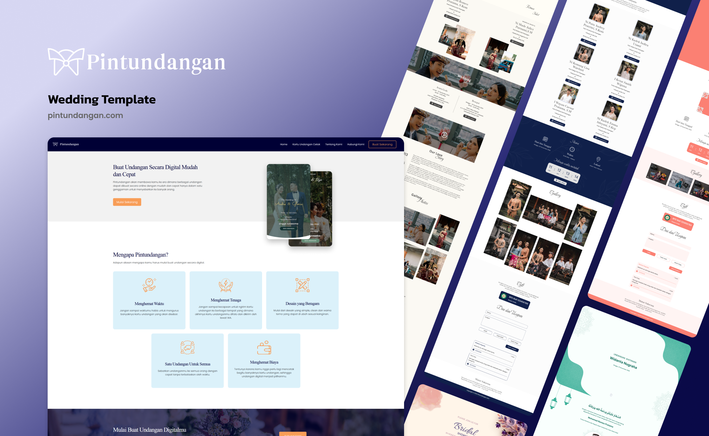

Dulu, nguopin dan mengundang berarti mengetuk pintu satu per satu untuk menjaga silaturahmi. Kini, Pintuundangan hadir untuk menjaga api tradisi tetap menyala di era digital. Tanpa mengurangi rasa hormat, teknologi ini memperluas jangkauan doa dan kehadiran kerabat.

Pintundangan.com — Landing Page, tampil di Laptop, Tablet & Smartphone
Indonesia merupakan negara yang kaya akan budaya dan tradisi luhur yang diwariskan secara turun-temurun. Salah satu bentuk pelestarian tradisi tersebut terlihat pada pelaksanaan berbagai acara sakral, seperti upacara pernikahan adat Bali, perayaan pernikahan Islami, pemberkatan Kristen, hingga upacara Manusa Yadnya yang meliputi Otonan dan Mepandes atau potong gigi. Dalam setiap perayaan tersebut, proses mengundang kerabat dan keluarga besar merupakan sebuah kewajiban etis serta bentuk penghormatan tertinggi untuk menjalin tali persaudaraan.
Pada masa lalu, undangan selalu dicetak menggunakan kertas premium dan diantarkan langsung dari pintu ke pintu. Akan tetapi, pada era digital dengan tingkat mobilitas masyarakat yang sangat tinggi, metode distribusi fisik mulai memunculkan berbagai kendala logistik dan finansial. Pintundangan hadir sebagai solusi inovatif yang merangkul teknologi untuk mengatasi tantangan tersebut, sekaligus menjaga esensi budaya yang melekat pada proses mengundang.
Ketergantungan pada undangan fisik pada era modern menghadirkan tiga masalah utama. Pertama, inefisiensi waktu dan tenaga dalam proses distribusi, terutama bagi tamu undangan yang berdomisili di luar kota atau luar pulau. Kedua, tingginya biaya produksi cetak kertas yang membebani anggaran penyelenggara acara. Ketiga, meskipun undangan digital mulai bermunculan, sebagian besar platform yang ada di pasaran hanya menawarkan desain minimalis kebarat-baratan. Desain yang terlalu umum tersebut sering kali menghilangkan esensi kesakralan, tata krama, dan nilai filosofis dari budaya lokal yang sangat dijunjung tinggi oleh masyarakat Indonesia.
Pintundangan adalah sebuah platform penyedia layanan undangan digital interaktif yang dirancang secara khusus untuk memfasilitasi kebutuhan seremonial di Indonesia. Platform ini bertindak sebagai jembatan yang mengubah medium komunikasi tradisional menjadi format digital tanpa mengurangi nilai kesopanan dan estetika budaya. Pintundangan mengakomodasi kompleksitas acara adat dengan menyediakan tata letak informasi yang berlapis, galeri visual yang dinamis, serta pengelolaan daftar tamu yang terpusat dalam satu tautan eksklusif.
Dari sudut pandang pengembangan produk, pelestarian budaya ini dicapai melalui proses rekayasa perangkat lunak dan perancangan antarmuka pengguna yang terstruktur. Sebagai pengembang web sekaligus desainer antarmuka, saya membagi proses ini ke dalam dua pilar utama.
Pendekatan desain antarmuka pengguna digunakan untuk mendigitalkan elemen-elemen tradisional agar dapat dinikmati di layar gawai. Proses perancangan dilakukan secara presisi menggunakan perangkat lunak Figma, mulai dari pembuatan kerangka dasar hingga purwarupa interaktif.
Tipografi dan Hierarki Visual: Saya menggunakan kombinasi huruf serif klasik untuk menonjolkan nama pemilik acara. Huruf tersebut disandingkan dengan huruf sans-serif yang modern untuk detail
waktu dan lokasi. Kombinasi ini bertujuan untuk mencapai tingkat keterbacaan yang maksimal pada layar telepon pintar.
Digitalisasi Ornamen Lokal: Motif tradisional, seperti pola ukiran Bali maupun motif geometris Islami, dirancang ulang menjadi aset vektor beresolusi tinggi. Hal ini memastikan ornamen tidak
pecah atau buram ketika dimuat pada berbagai resolusi layar.
Pendekatan Berbasis Seluler: Mengingat lebih dari sembilan puluh persen tamu akan membuka tautan melalui perangkat seluler, tata letak setiap tema undangan dioptimalkan untuk navigasi satu
tangan.
Pintundangan mengimplementasikan arsitektur Model-View-Controller (MVC) menggunakan PHP (Laravel) dan pengelolaan database relasional MySQL, diperkuat dengan integrasi layanan eksternal.
Pintundangan meredefinisi cara masyarakat bersilaturahmi dengan menghadirkan fitur-fitur yang solutif. Salah satu tantangan terbesar dalam digitalisasi acara adat adalah memfasilitasi tradisi pemberian tali kasih yang dikenal dengan istilah kondangan atau metanjung. Pintundangan mengakomodasi tradisi ini melalui integrasi teknologi finansial.
Tamu yang berhalangan hadir karena kendala geografis tetap dapat mengirimkan doa restu. Pesan tersebut akan langsung tampil dan bergulir pada halaman undangan beserta keterangan waktu pengiriman.
Fitur ini mengintegrasikan kode pindai QRIS, nomor rekening bank, dan dompet digital. Untuk menjaga etika kesopanan adat ketimuran, informasi perbankan tersebut disembunyikan di dalam kotak dialog yang hanya akan muncul apabila tamu menekan tombol hadiah.
Cashless Gift: Barcode QRIS, Virtual Account, dan E-Wallet dibungkus dalam desain pop-up yang discreet — hanya tampil saat tamu mengklik tombol, menjaga etika kesopanan adat ketimuran.
Memangkas biaya cetak undangan fisik premium hingga jutaan rupiah.
Menekan penggunaan kertas dan plastik sekali pakai secara drastis.
Perubahan jadwal atau ralat dapat diperbarui secara live tanpa cetak ulang.
Implementasi sistem informasi pada Pintundangan membuktikan bahwa teknologi hadir bukan sebagai disrupsi yang merusak tradisi, melainkan sebagai instrumen yang melestarikannya. Dengan menggabungkan pemahaman System Architecture, Database Management, dan UI/UX Design — kearifan lokal dalam tata cara mengundang kini telah berevolusi menjadi lebih terstruktur, inklusif, dan relevan di era digital.